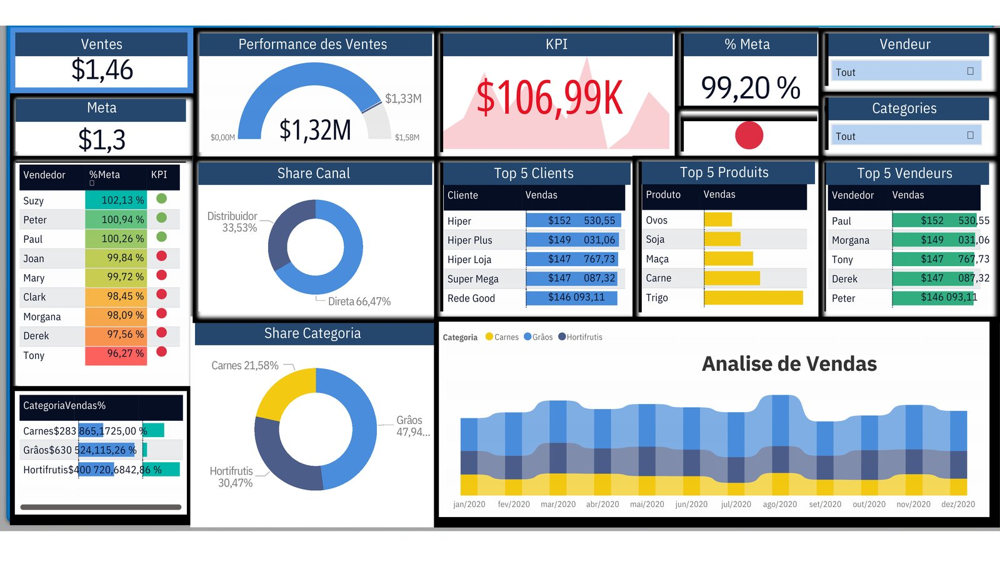
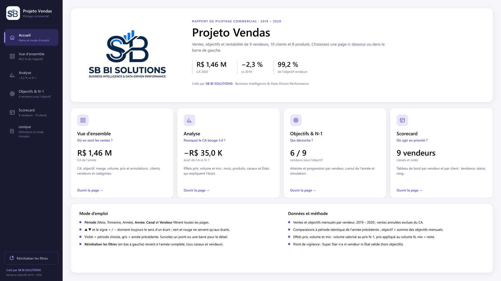
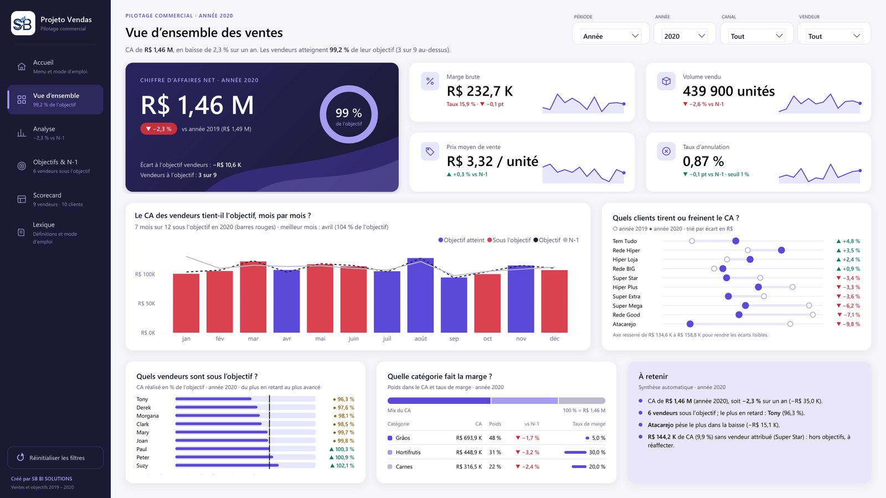
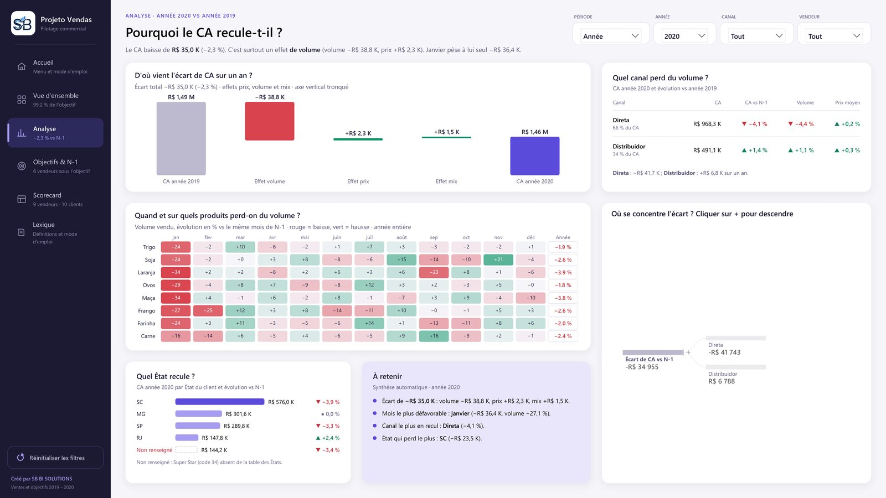
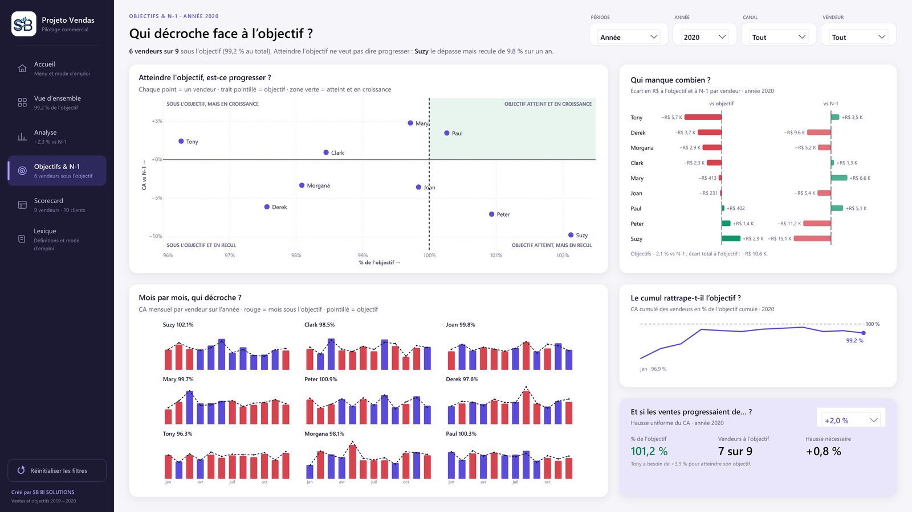
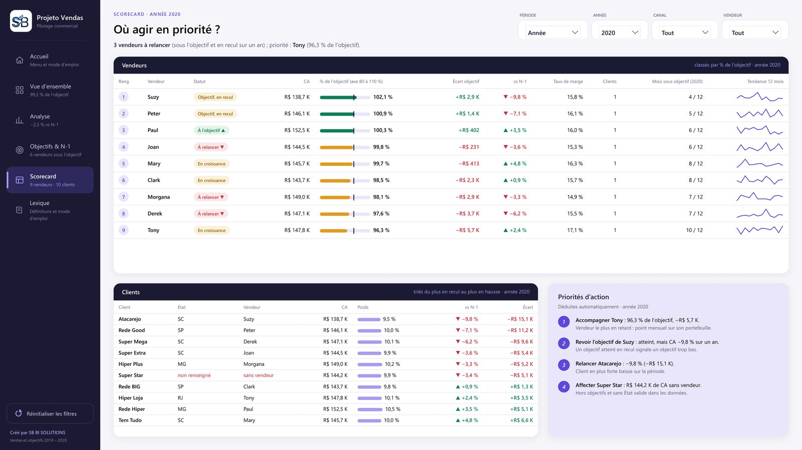
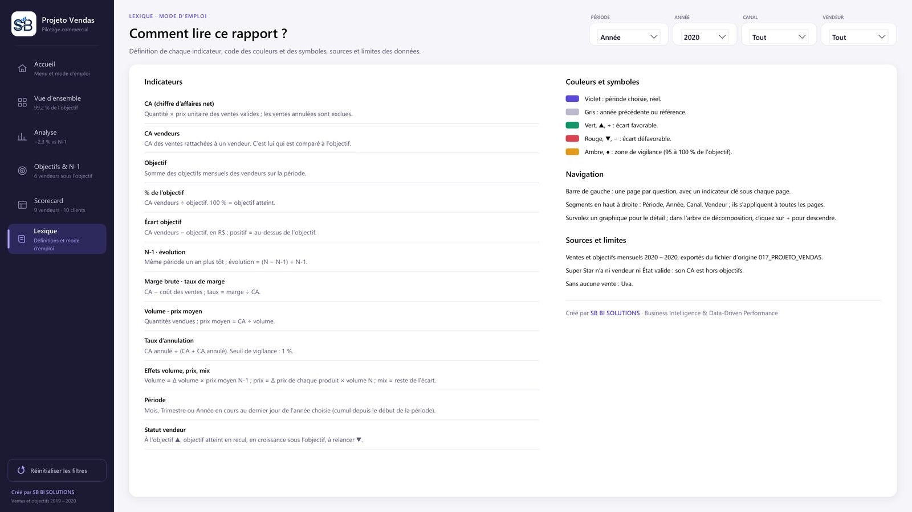

01 · AvantLe point de départ
Un écran unique très dense : une quinzaine de visuels, une jauge, trois tableaux top 5 et des couleurs sans signification.
Les chiffres sont là, mais rien ne dit si la situation est bonne ou mauvaise, ni pourquoi le CA bouge, ni qui relancer.

02 · DémarcheCe que j'ai fait
- Une page par question : vue d'ensemble, analyse des écarts, objectifs et N-1, scorecard, plus un accueil et un lexique.
- Calendrier en années pleines pour des comparaisons N-1 justes ; groupe de calcul Mois / Trimestre / Année appliqué dans les mesures.
- Décomposition de l'écart de CA en effets prix, volume et mix ; carte de chaleur produit × mois ; quadrant objectif × N-1.
- Une scorecard qui classe les vendeurs, attribue un statut et déduit automatiquement les priorités d'action.
03 · RésultatCe que le rapport révèle
de CA en 2020 (R$ 1,46 M, −R$ 35,0 K) : c'est un effet volume (−R$ 38,8 K), pas un effet prix (+R$ 2,3 K).
vendeurs sous l'objectif ; le plus en retard est Tony (96,3 %). 3 vendeurs sont à relancer.
de CA sans vendeur attribué (Super Star, 9,9 %) : hors objectifs, à réaffecter.
04 · Les pages6 pages, une question chacune






05 · VidéoLe rapport en mouvement
06 · TransparenceDonnées et limites
Données de démonstration (ventes et objectifs 2019-2020 : 14 416 lignes de vente, 216 objectifs), exportées du rapport d'origine. Montants en réais (R$).
Un rapport comme celui-ci pour votre activité ?
Je pars de vos données et de vos décisions, puis je construis le modèle, les mesures et les pages qui y répondent.